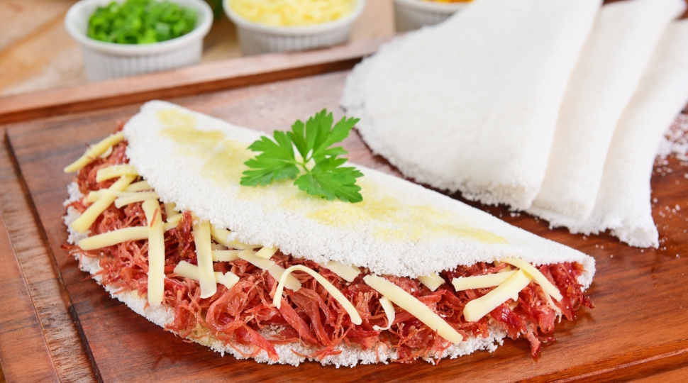
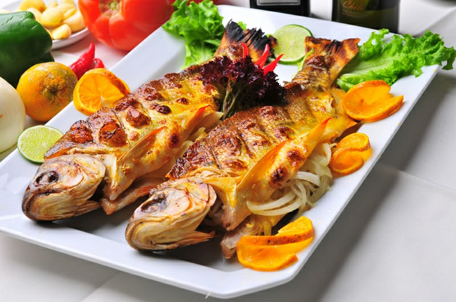
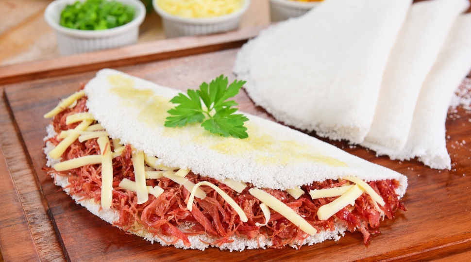
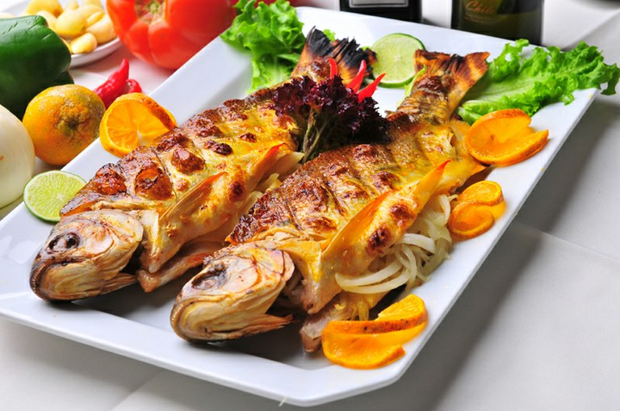

A culinária do Brasil é fruto de uma mistura de ingredientes europeus, indígenas e africanos.
Muitos dos componentes das receitas e técnicas de preparo são de origem indígena, tendo sofrido modificações por parte dos portugueses e dos escravos oriundos da África. Esses faziam adaptações dos seus pratos típicos substituindo os ingredientes que faltassem por correspondentes locais. A feijoada à brasileira, prato típico do país, é um exemplo disso.
A comida tradicional do estado do Paraná é o barreado, carne cozida em panelas de barro, por vezes colocadas debaixo da terra para cozinharem sob o calor de lenha ou carvão, e comida com farinha de mandioca. O pinheiro de araucária produz o pinhão, alimento muito presente na cozinha paranaense. É consumido de várias formas: cozido, assado, e pode ser saboreado com sal, açúcar, mel ou melado. No estado são comuns festas tradicionais que envolvem um preparo específico da comida, como o Boi no Rolete, Carneiro no Buraco e o Leitão Maturado.
Os pratos são sempre carregados de muita carne bovina e de vinhos, por conta da grande imigração italiana, que tem forte influência nos pratos.

 


